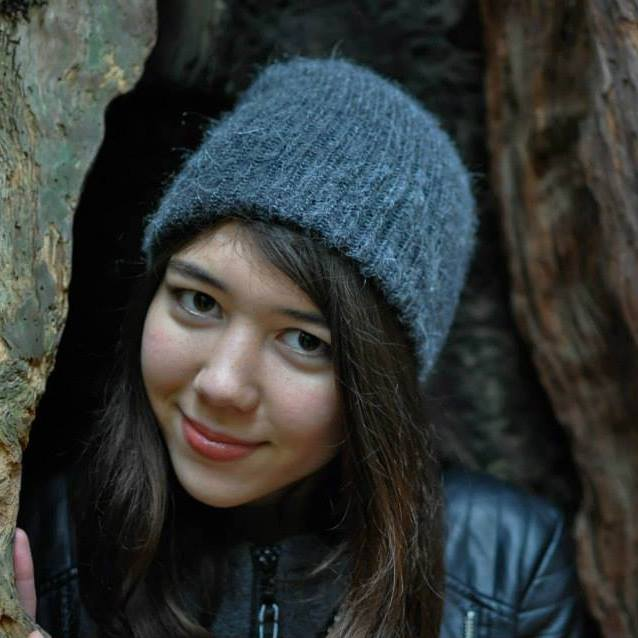

Welcome to my World!
I am a digital media artist looking to explore more of the world and capture my amazing experiences through images, videos, and written documentation through my online blog, Maryelle Media.

Work Experience
Photography Assistant
Infinity Portrait Design, Summer 2016- Helped build, break down, and transport setups for photo shoots
- Uploaded and edited images on Adobe Bridge and Photoshop
- Organized archival photographs and business documents
Video Production Intern
Windy Films, Fall 2016- Helped set up studio and equipment
- Edited images for social media/website
- Gathered on location footage and behind the scenes pictures
- Independently and collaboratively shot B-roll for short documentaries
Marketing and Media Representative
Hemedex, Inc. Summer/Fall 2017- Shot commercial photography and promotional videos
- Created a series of informational videos for company website
- Managed website and created graphics, images, brochures, and posters for distribution